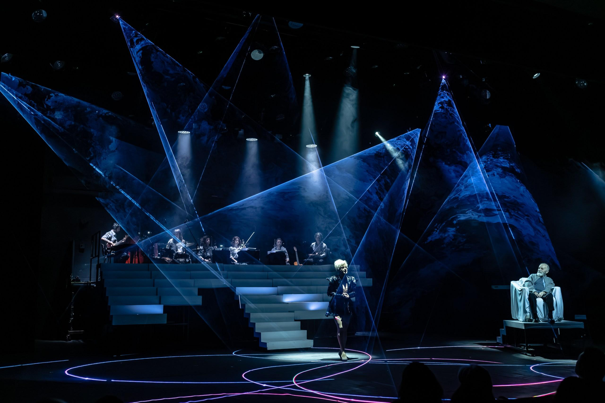
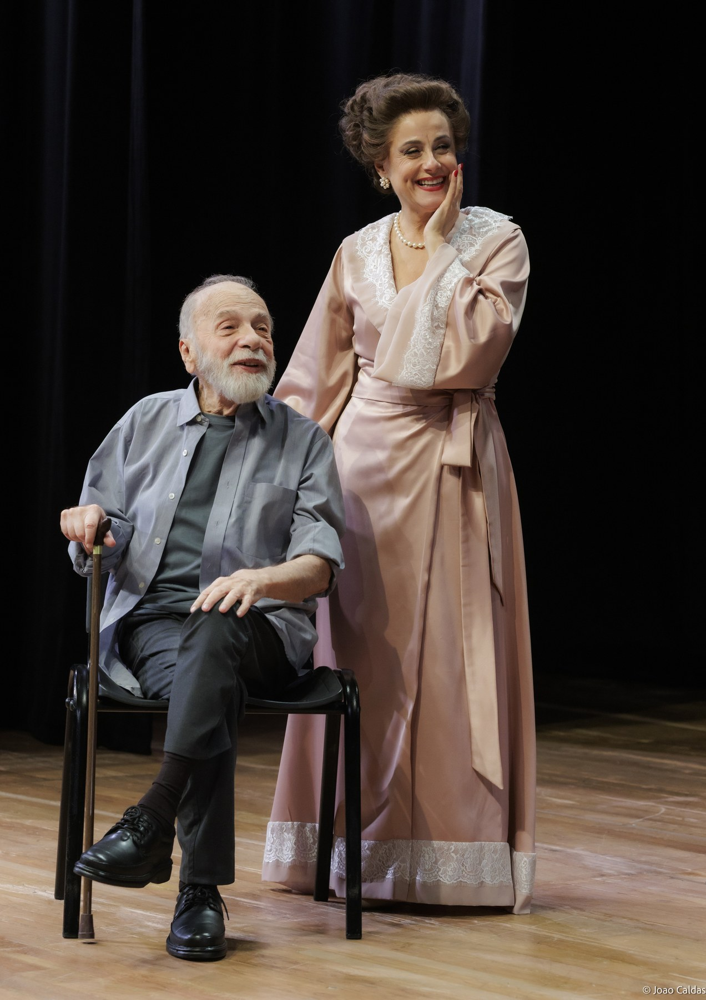
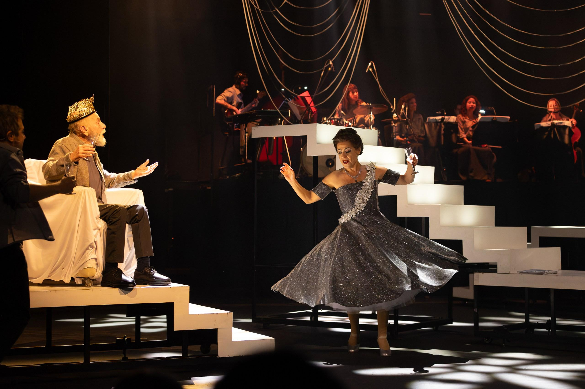
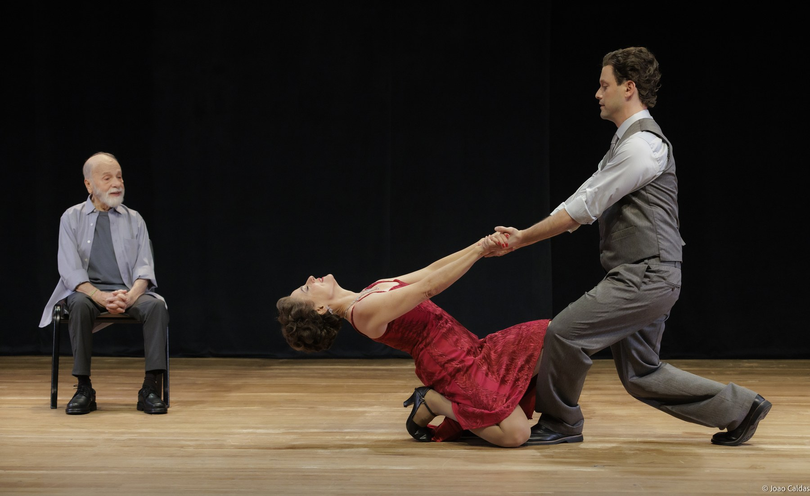
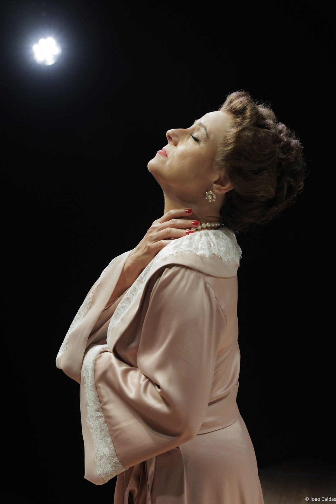

Foto: João CaldasEm 1969, Renato Borghi encontrou Dalva de Oliveira no restaurante Gigetto e quis convidá-la para cantar Brecht e Weill. Não conseguiu formular o convite. A morte de Dalva, em 1972, interrompeu a possibilidade.
Em 2026, o encontro chegou ao palco: Renato interpreta a si mesmo e Soraya Ravenle convoca a Rainha do Rádio como presença viva e coautora ficcional. Em 2027, quando Renato faz 90 anos e Dalva faria 110, o encontro atravessa o país.
Em dois atos e aproximadamente 100 minutos, o samba-canção da era de ouro do rádio encontra o teatro épico de Brecht e as canções de Kurt Weill - com direção artística de Elias Andreato e Elcio Nogueira Seixas, direção musical e arranjos de William Guedes e sete instrumentistas ao vivo.
A CENOGRAFIA MODULAR de Márcia Moon preserva a escadaria, recompõe-se em palcos distintos e será integralmente reutilizada nas cinco regiões, com meta de zero resíduo cenográfico.

Foto: João Caldas
Quatro apresentações de quinta a domingo em cada cidade - e oito no Rio de Janeiro. A campanha nacional e os 12 planos locais de comunicação e mobilização serão orientados para a ocupação integral do inventário: as 52 apresentações têm potencial de receber 35.536 espectadores.

Foto: João CaldasAtiva desde 1979, a Renato Borghi Produções Artísticas é a casa do Teatro Promíscuo, fundado em 1993. O Jardim das Cerejeiras (2000) e a Mostra de Dramaturgia Contemporânea (2002) - premiada com Shell e APCA - circularam com patrocínio da Petrobras.
Renato Borghi: cofundador do Teatro Oficina, protagonista de O Rei da Vela (1967) e vencedor de três Prêmios Molière.